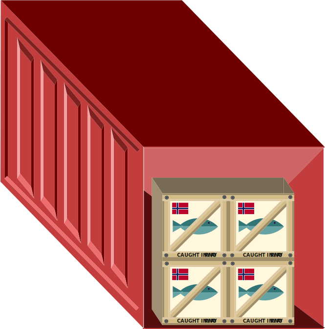
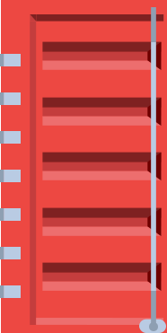
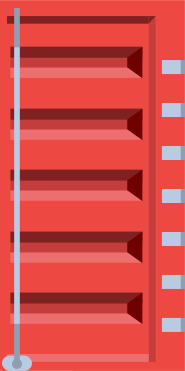
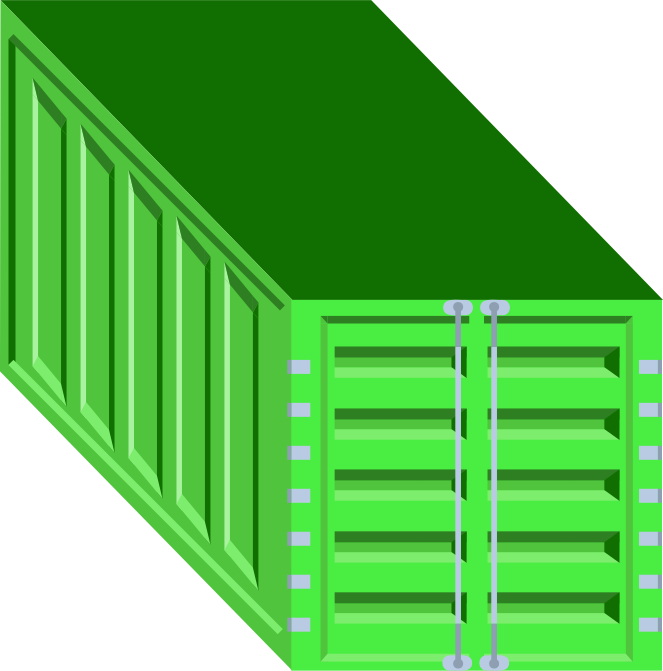
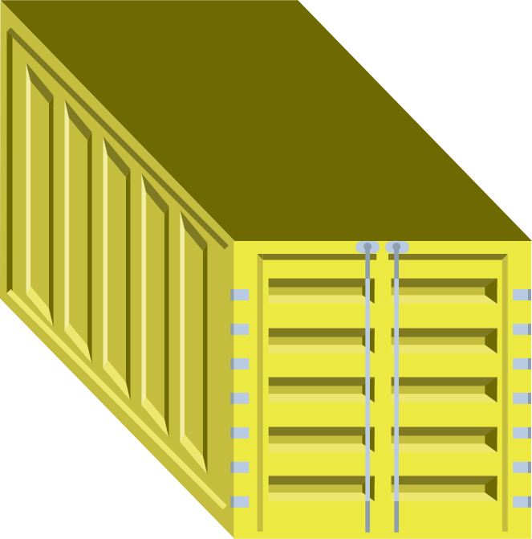
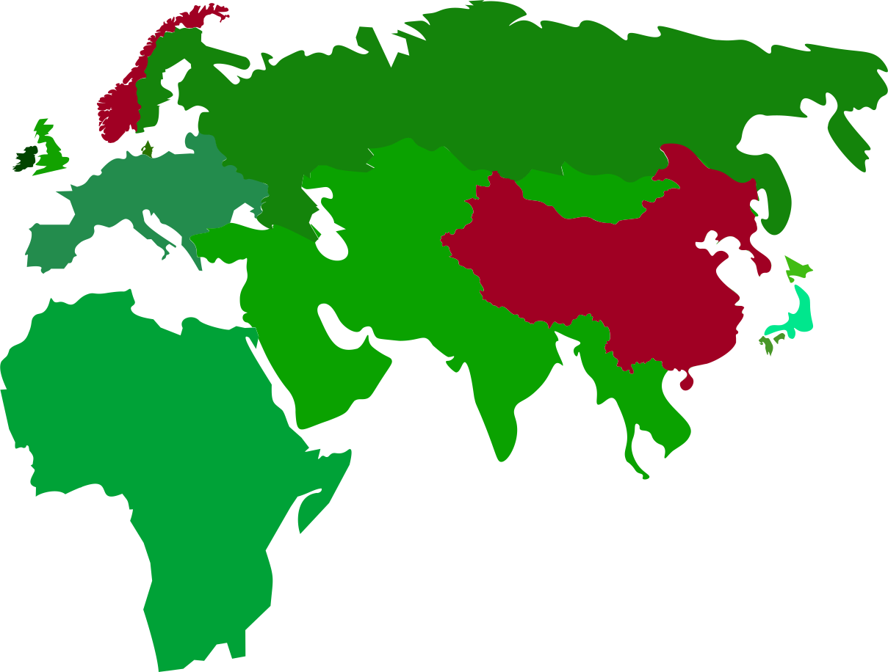

Enviromental Impact
Navigating the Norwegian Sea, where the waters echo with the vitality of marine life. Yet beneath the surface, a tale of unnecessary miles begins
Once caught, the fish are transported to local processing facilities where they are carefully packed

Every year, countless fish travel from Norway to China for processing. This awaiting a journey that streches bounds of miles, significantly increases their carbon footprint
    
The fish are then shipped to China for further processing
The journey across the seas is long but necessary to ensure the fish reach their destination in prime condition
After arriving in Chinese factories, the fish are processed using labor and materials cheaper than in Norway, contributing to global CO2 emissions
After processing, the fish products are shipped back to Norway. It emphasizes the importance of choosing products that support sustainable practices
Back in Norway, the processed fish products are ready for consumers, but the trip has left a mark
Choose products that champion sustainability, supporting their carbon conscious voyage from start to shelf